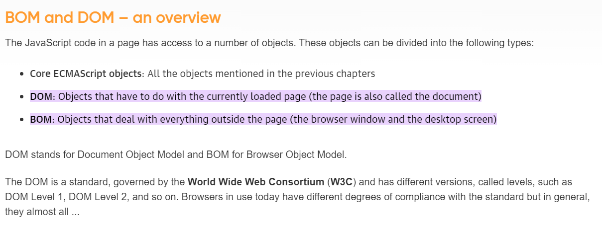

Browser Object Model (BOM) is a browser-specific convention referring to all the objects exposed by the web
browser. The BOM allows JavaScript to “interact with” the browser. The window object represents a browser window
and all its corresponding features. A window object is created automatically by the browser itself. Java
Script’s window.screen object contains information about the user’s screen. It can also be written without the
window prefix. This Object Model supports the following Window properties:
- screen.width: The screen.width property returns the user’s screen width in pixels.
- screen.height: The screen.height property returns the user’s screen height in pixels.
- screen.availWidth: The screen.availWidth property returns the user’s screen width in pixels, excluding the interface features.
- screen.availHeight: The screen.availHeight property returns the user’s screen height in pixels excluding the interface features.
- screen.colorDepth: The screen.colorDepth property returns the bits (number) to be used to display one color.
- screen.pixelDepth: The screen.pixelDepth property returns the pixel depth of the screen.